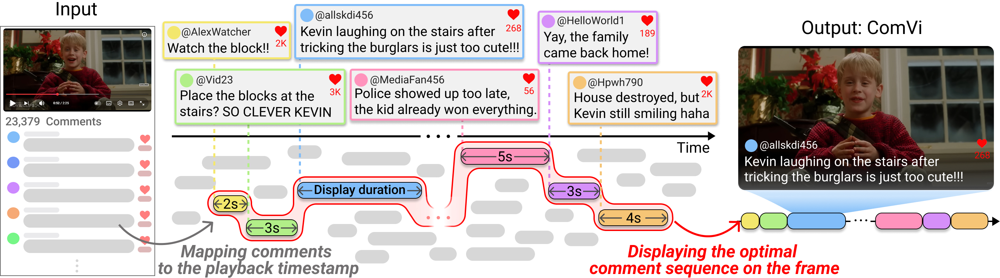

Overview of ComVi. Given a video and its comments (Input), ComVi first maps each comment to semantically relevant timestamps by computing audio-visual correlations. It then selects an optimal comment sequence by balancing temporal semantic relevance, popularity, and adequate display durations. Finally, the selected comments are presented on the video frame at their corresponding timestamps during playback (Output).
On general video-sharing platforms like YouTube, comments are displayed independently of video playback. As viewers often read comments while watching a video, they may encounter ones referring to moments unrelated to the current scene, which can reveal spoilers and disrupt immersion. To address this problem, we present ComVi, a novel system that displays comments at contextually relevant moments, enabling viewers to see time-synchronized comments and video content together. We first map all comments to relevant video timestamps by computing audio-visual correlation, then construct the comment sequence through an optimization that considers temporal relevance, popularity (number of likes), and display duration for comfortable reading. In a user study, ComVi provided a significantly more engaging experience than conventional video interfaces (i.e., YouTube and Danmaku), with 71.9% of participants selecting ComVi as their most preferred interface.
The following examples demonstrate how ComVi aligns comments with contextually relevant moments.
On top of the automated comment curation, ComVi supports user-driven customization, offering the following features:
Viewers can control how many comments appear on screen at the same time.
Viewers can enter a custom query to filter comments by natural language, showing only those that match their specific interests during playback.
Viewers can adjust the comment display duration to match their personal reading speed.
We compared comment-reading experiences in ComVi with conventional video interfaces: YouTube and Danmaku. In our user study (N=32), ComVi achieved significantly higher engagement with lower physical demand than YouTube and lower mental demand than Danmaku.